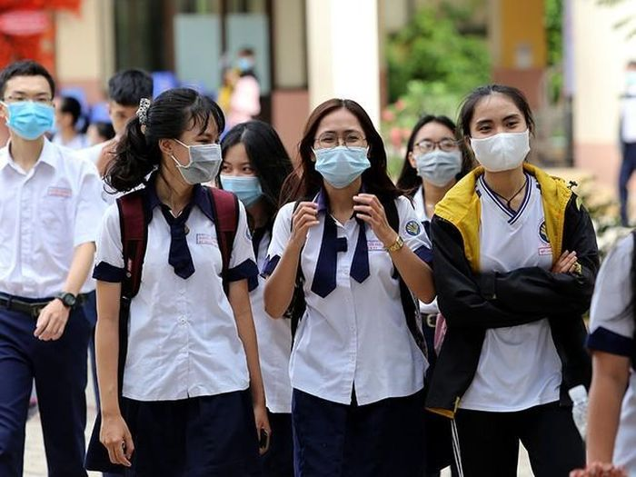

Để chuẩn bị tổ chức tốt kỳ thi tốt nghiệp THPT 2023, Bộ Giáo dục và Đào tạo dự kiến sửa đổi, bổ sung một số quy định theo hướng nâng cao chất lượng, hiệu quả.
Theo đó, chia sẻ về nội dung sửa đổi, bổ sung một số quy định theo hướng nâng cao chất lượng, hiệu quả trong công tác tổ chức kỳ thi tốt nghiệp THPT 2023, PGS.TS Huỳnh Văn Chương, Cục trưởng Cục Quản lý chất lượng, Bộ Giáo dục và Đào tạo cho biết, ba năm qua (2020, 2021, 2022) Bộ Giáo dục và Đào tạo tổ chức thành công kỳ thi tốt nghiệp THPT trong bối cảnh dịch COVID-19 phức tạp, bảo đảm mục tiêu kép vừa nghiêm túc, khách quan vừa an toàn phòng chống dịch bệnh. Bộ tiếp tục giữ ổn định kỳ thi năm 2023 như các năm trước.

Trong đó, các quy định về phương thức tổ chức thi, bài thi, ra đề thi, coi thi, chấm thi, cách tính điểm xét tốt nghiệp, phúc khảo... cơ bản được giữ nguyên. Tuy nhiên, Bộ chỉ điều chỉnh một số nội dung mang tính kỹ thuật, nghiệp vụ để tăng cường kỷ cương, nề nếp phòng thi, đáp ứng tốt hơn yêu cầu tổ chức kỳ thi an ninh, an toàn.
Về đăng ký dự thi, năm 2022, hệ thống của Bộ Giáo dục và Đào tạo ghi nhận gần 1 triệu thí sinh (đạt tỷ lệ 93,1%) đăng ký dự thi tốt nghiệp THPT trực tuyến, tiết kiệm hàng trăm tỷ đồng chi phí cho ngân sách. Do đó, năm nay, Bộ tiếp tục tổ chức đăng ký bằng hình thức trực tuyến cho đối tượng là thí sinh đang học lớp 12.
Riêng thí sinh chưa thi tốt nghiệp THPT ở những năm trước và thí sinh tự do thực hiện đăng ký dự thi và xét công nhận tốt nghiệp THPT (nếu có) trực tiếp tại đơn vị đăng ký dự thi do Sở Giáo dục và Đào tạo quy định.
Bên cạnh đó, việc đẩy mạnh ứng dụng công nghệ thông tin, chuyển đổi số trong việc đăng ký trực tuyến và tổ chức thi mang lại nhiều lợi thế cho cả thí sinh, nhà trường và toàn xã hội. Đơn cử, các thí sinh thuận lợi tra cứu và hạn chế tối đa sai sót thông tin cá nhân.
Kết quả học và thi của học sinh được lưu bản điện tử, thuận tiện đối chiếu khi cần và có thể truy xuất mọi lúc, mọi nơi. Học sinh có thể tự hỗ trợ, hướng dẫn lẫn nhau trong việc kê khai thông tin.
Về đề thi tốt nghiệp THPT năm 2023, Bộ chủ trương giữ ổn định như năm 2022. Bộ Giáo dục và Đào tạo căn cứ vào kế hoạch thời gian năm học để lựa chọn lịch tổ chức kỳ thi phù hợp và sẽ công bố trong thời gian tới đây. Bên cạnh đó, Bộ Giáo dục và Đào tạo sẽ tiếp tục triển khai nhiều giải pháp.
Một, Bộ sẽ điều chỉnh một số vấn đề kỹ thuật để tăng cường kỷ cương, nền nếp phòng thi cũng như bảo đảm an toàn, an ninh trong suốt kỳ thi. Điều này được thể hiện trong dự thảo sửa đổi, bổ sung một số điều của quy chế thi tốt nghiệp THPT.
Hai, đơn vị tiếp tục tăng cường chất lượng đề thi đồng thời tăng cường công tác thanh tra, kiểm tra toàn bộ các khâu tổ chức thi. Cùng với các đoàn kiểm tra của Bộ, địa phương cần tăng cường thanh tra, kiểm tra, giám sát kỳ thi tại địa phương để bảo đảm tổ chức kỳ thi an toàn, nghiêm túc, minh bạch, khách quan và chất lượng.
Ba, Bộ sẽ tăng cường quán triệt quy chế và tập huấn nghiệp vụ tổ chức thi, thanh tra thi; tiếp tục phối hợp với Bộ Công an, các bên liên quan tập huấn nghiệp vụ tổ chức thi, thanh tra thi, nhất là việc thực hiện các biện pháp phòng chống, ngăn chặn gian lận thi cử, đặc biệt là gian lận bằng các thiết bị công nghệ cao.
ốn, Bộ Giáo dục và Đào tạo đẩy mạnh công tác truyền thông để nhận được sự đồng thuận, quyết tâm tổ chức thi an toàn, nghiêm túc, khách quan, hiệu quả. Trong đó, yêu cầu các Hội đồng thi phổ biến đầy đủ, quán triệt kỹ quy chế thi cho thí sinh, lưu ý thí sinh tuyệt đối không được sử dụng những thiết bị công nghệ cao để gian lận thi cử.
Năm, Bộ sẽ tăng cường phối hợp với các bộ, ngành liên quan và các địa phương trong chỉ đạo tổ chức thi. Trong đó, đề nghị các địa phương chủ động thực hiện các khâu tổ chức kỳ thi theo đúng tinh thần chịu trách nhiệm toàn diện về kỳ thi tại địa phương.
Trước đó, theo Nghị quyết số 10/NQ-CP, phiên họp Chính phủ thường kỳ tháng 1/2023 được công bố ngày 9/2, Chính phủ yêu cầu Bộ Giáo dục và Đào tạo phải sớm có kế hoạch, hướng dẫn tổ chức kỳ thi tốt nghiệp trung học phổ thông, tuyển sinh đại học, cao đẳng, đảm bảo công bằng, minh bạch.
Nghị quyết ban hành trong bối cảnh kỳ thi tốt nghiệp THPT 2023 dự kiến có một số thay đổi về đề thi theo hướng tăng cường vận dụng thực tiễn
Chính phủ cũng yêu cầu Bộ Giáo dục và Đào tạo chủ trì, phối hợp với các cơ quan, địa phương hoàn thiện chiến lược phát triển giáo dục đến năm 2030, tầm nhìn đến năm 2045, đề án tăng cường kiểm soát và nâng cao chất lượng đào tạo cử nhân luật đến năm 2030, trình Thủ tướng Chính phủ; chuẩn bị, tổ chức tốt Đại hội Thể thao học sinh Đông Nam Á năm 2023 tại Việt Nam.
Tích cực thực hiện Chương trình giáo dục phổ thông mới và chuẩn bị nội dung phục vụ hoạt động giám sát của Quốc hội về thực hiện Nghị quyết 88/2014/QH13 về đổi mới chương trình, sách giáo khoa giáo dục phổ thông;
Tập trung tổ chức tốt việc tổng kết 10 năm Nghị quyết số 29-NQ/TW ngày 4/11/2012 của Ban Chấp hành T.Ư khóa XI về đổi mới căn bản, toàn diện GD&ĐT, đáp ứng yêu cầu công nghiệp hóa, hiện đại hóa trong điều kiện kinh tế thị trường định hướng xã hội chủ nghĩa và hội nhập quốc tế.